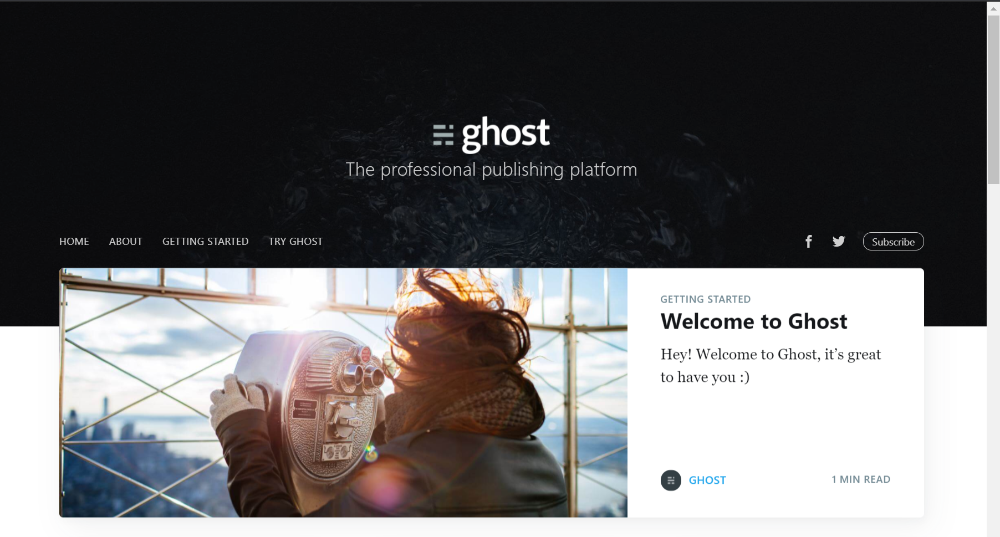
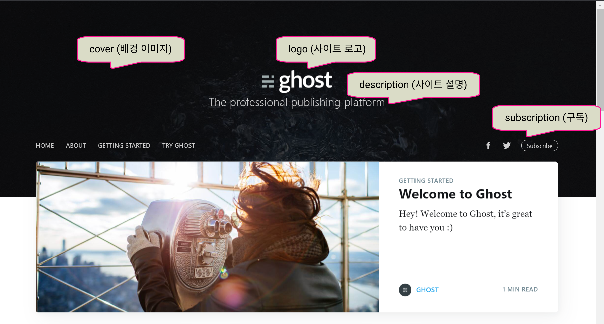
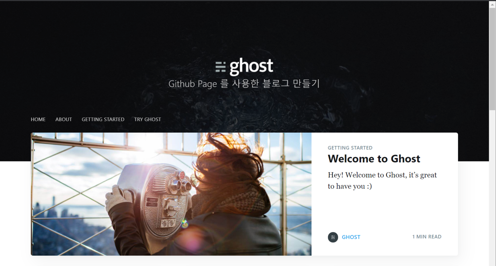

#03 사이트 설정 (_config.yml)
지난 포스팅을 통해서 우리는 로컬서버에서 동작하는 홈페이지를 갖게 되었습니다.
결과물을 다시 확인해 보면 다음과 같습니다.

이제 우리 블로그에 맞도록 각 요소를 수정하고자 합니다.
수정해야할 요소를 큰 그룹으로 분류해보면 다음과 같습니다.
- 사이트 설정: _config.yml
- 작성자(저자) 설정: authors.yml
- 태그 설정: tags.yml
- 메뉴 설정: navigation.html
이번 포스팅에서는 사이트 설정을 위해 _config.yml파일을 수정해 보겠습니다.
Jekyll 프로젝트의 사이트 설정은 _config.yml 파일에서 수정할 수 있습니다.
경로: 루트/_config.yml
사이트 전체에 대한 설정이므로, 화면상에서 보이는 요소 뿐만 아니라 프로젝트 자체 설정도 해야 합니다.
우선 _config.yml을 수정했을 때, 화면에 보이는 요소를 보면 아래 말풍선과 같습니다.

이제 우리의 블로그에 맞는 값으로 수정하기 위해 _config.yml 파일을 열고, 다음과 같이 수정해 봅니다.
# 마크다운 형식 - kramdown
markdown: kramdown
# 포스팅에 코드출력 시 스타일
highlighter: rouge
# 한 화면에 출력할 게시물 개수
paginate: 10 # it will paginate after this number
# 언어
language: 'en-uk'
words_per_minute: 200
# edit baseurl to simply '/' if using as your personal page (instead of a project page)
baseurl: /
# 홈페이지 제목
title: 테스트 블로그
# 홈페이지 설명
description: Github Page 를 사용한 블로그 만들기
# 홈페이지 배너 이미지
cover: assets/images/blog-cover.jpg
# 홈페이지 로고 이미지
logo: assets/images/blog-icon.png
logo_dark: assets/images/favicon.png
# 파비콘 이미지
favicon: assets/images/favicon.png
CNAME: #add cname for website to be created
# 메뉴 사용 여부
navigation: True # show the navbar links
# 구독 기능 사용 여부
subscribers: False # you need to connect an external service
# 트위터 유저명
twitter: #tryghost # replace by your username
# 페이스북 유저명
facebook: #ghost # replace by your username
# 댓글 기능 사용여부 (Disqus)
disqus: False
disqus_shortname: jekyller # replace with your disqus username
# 게시물의 상세페이지에 대한 고정주소 형식 설정
permalink: /:title
# Jekyll 플러그인 등록
plugins: [jekyll-paginate, jekyll-feed]
feed:
path: feed.xml
# 홈페이지 소유자명
username: chocobe
# 배포 시, Github 저장소 주소
repo: # jasper2
# 배포 시, 사용할 브랜치명
branch: master
relative_source: #../jasper2/
# 빌드 시, 결과물을 저장할 경로
destination: ../jasper2-pages/
# 배포 시, 접속을 위한 URL값
production_url: https://jekyller.github.io/jasper2/
# 배포 파일이 저장된 저장소 경로
source_url: https://github.com/jekyller/jasper2/
# 빌드 예외파일 설정
exclude:
- assets/css
- node_modules
- vendor
- .travis.yml
- Gemfile
- Gemfile.lock
- GHOST.txt
- gulpfile.js
- LICENSE
- package.json
- package-lock.json
- Rakefile
- README.md
- script.py
- changelog.md
- "*.Rmd"
- .git*
# 홈페이지 소유자 정보설정
owner:
# 홈페이지 소유자 이름
name: "김영우"
# 아바타 이미지
avatar: # "./assets/images/abraham.jpg"
# 홈페이지에 대한 간단한 소개(설명)
bio: "Vue와 Typescript를 좋아합니다"
# 이메일
email: "kyw05171@gmail.com"
# Github 주소
github: "https://github.com/Chocobe"
# Github 저장소 주소
url: "https://chocobe.github.io"
(로컬서버 재시작을 해야지만 적용된 결과를 확인할 수 있습니다.)

이번 과정으로 사이트 설정을 하였습니다.
다음 포스팅에서는 작성자 (저자)에 대한 설정을 해 보겠습니다.
Github Page 전체 목차 입니다.